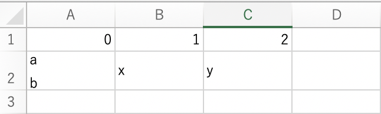
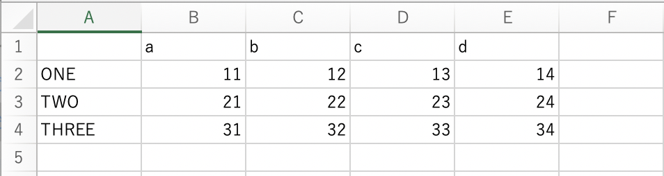

Hướng dẫn cách xử lý file CSV trong python. Bạn sẽ học được cách ghi file csv trong python bằng cách dùng list với hàm csv.writer hay dùng dictionary bằng class csv.DictWriter . Bạn cũng sẽ học được cách ghi file csv trong python với các trường hợp đặc biệt như ghi chèn file CSV, ghi file CSV chứa dấu ngoặc kép, chứa header v.v.. sau bài học này.
Ghi file csv trong python | csv.writer
Ghi list vào file csv trong python
Để ghi list vào file csv trong python, trước hết chúng ta cần mở file đó bằng hàm open() hoặc câu lệnh with với mode w, sau đó tiến hành ghi file csv đã mở bằng hàm csv.writer() như sau:
with open('./user/user.csv','w') as f: |
Lưu ý là do chúng ta mở file với mode w nên nếu file CSV đã tồn tại trước đó thì nội dung cũ sẽ bị xóa đi, và chúng ta sẽ ghi đè nội dung mới vào file CSV.
Sau khi mở file bằng hàm open(), chúng ta thu về một file object và gán nó vào biến f. Sau đó chúng ta chỉ định f làm đối số của hàm csv.writer(), kết quả là một writer object có khả năng ghi nội dung được tạo ra.
Sau khi tạo xong writer object này, chúng ta có thể sử dụng các phương thức như writerow() mà chúng ta đã dùng trong ví dụ trên với writer object để ghi nội dung từ một list vào file csv trong python.
Ở ví dụ trên, chúng ta đã ghi hai dòng nội dung vào file csv. Hãy kiểm tra nội dung đã ghi bằng lệnh sau:
with open('./user/user.csv','w') as f: |
Nếu chúng ta chỉ định đối số của phương thức writerow() ở trên là một list đa chiều, thì từng list trong list đa chiều sẽ được ghi vào file csv như là một hàng vậy.
l = [[11, 12, 13, 14], [21, 22, 23, 24], [31, 32, 33, 34]] |
Ghi chèn file csv trong python | mode a
Để ghi chèn nội dung vào một file csv đã tồn tại trước đó, chúng ta mở file csv bằng hàm open() với mode a. Về cách ghi file csv thì cũng giống như phần trên, chúng ta cũng dùng hàm csv.write và các phương thức như writerow() hoặc writerows() để ghi file csv trong python.
with open('./user/user.csv', 'a') as f: |
Chỉ định dấu phân cách delimiter khi ghi file csv
Về mặc định trong file csv, dấu phân cách sẽ là dấu phẩy ,. Tuy nhiên nếu bạn muốn thay đổi dấu phân cách trong file csv đang ghi, hãy chỉ định đối số delimiter trong hàm csv.writer.
Ví dụ, chúng ta chỉ định ký tự phân cách là ký tự tab \t như sau:
with open('./user/user.tsv', 'w') as f: |
Trong trường hợp bạn muốn thay thể ký tự phân cách bằng ký tự trắng, chỉ cần chỉ định delimiter=' ' là xong.
Xử lý dấu ngoặc kép khi ghi file csv trong python
Về mặc định khi ghi file csv thì các chuỗi ký tự chứa trong nó ký tự phân cách, ví dụ như là dấu phẩy , trong chuỗi a,b,c chẳng hạn sẽ được ghi vào file csv kèm với dấu ngoặc kép như sau:
l = [[0, 1, 2], ['a,b,c', 'x', 'y']] |
Trong trường hợp bạn muốn thêm dấu ngoặc kép vào tất cả các chuỗi ký tự ghi vào file csv trong python, hãy chỉ định đối số quoting=csv.QUOTE_ALL trong hàm csv.writer như sau:
with open('./user/user_quote_all.csv', 'w') as f: |
Ngoài ra, bạn cũng có thể chỉ định quoting=csv.QUOTE_NONNUMERIC để thêm dấu ngoặc kép vào tất cả các chuỗi không phải là chữ số như sau:
with open('./user/user_quote_nonnumeric.csv', 'w') as f: |
Nếu chỉ định csv.QUOTE_NONE thì tất cả các chuỗi ký tự sẽ không được thêm dấu ngoặc kép khi ghi vào file csv. Tuy nhiên chúng ta cần chỉ định thêm giá trị escapechar để xử lý dấu phân cách chứa trong chuỗi ký tự đó nếu có.
with open('./user/user_quote_none.csv', 'w') as f: |
Cuối cùng, về mặc định thì dấu ngoặc kép được dùng, tuy nhiên chúng ta cũng có thể thay đổi thành dấu khác bằng cách chỉ định quotechar như sau:
with open('./user/user_quote_char.csv', 'w') as f: |
Ghi file csv kèm ký tự xuống dòng
Trong một số trường hợp, chúng ta cần ghi chuỗi ký tự tồn tại cả ký tự xuống dòng vào file csv, chẳng hạn như chuỗi 'a\nb' trong file csv sau đây:

Khi đó, chúng ta cần viết chuỗi đó giữa cặp dấu ngoặc kép, như dưới đây.
l = [[0, 1, 2], ['a\nb', 'x', 'y']] |
Xử lý file CSV chứa header trong python
Trong trường hợp chúng ta muốn ghi file csv kèm header trong python, đơn giản chúng ta cũng dùng phương thức writerow() để ghi nội dung header vào file csv là xong.
l = [[11, 12, 13, 14], [21, 22, 23, 24], [31, 32, 33, 34]] |
Kết quả:

Ghi file csv trong python | csv.DictWriter
Ở phần trên chúng ta đã học cách ghi list vào file csv trong python rồi. Thay vì sử dụng list, bạn cũng có thể ghi dictionary vào file csv trong python bằng hàm csv.DictWriter với cú pháp sau đây:
csv.DictWriter ( f , fieldnames )
Trong đó f là một object file được tạo ra khi mở file csv bằng hàm open(), và fieldnames để chỉ định các giá trị của key trong dictionary làm dòng header trong file csv.
Ví dụ:
1 = {'a': 1, 'b': 2, 'c': 3} |
Trong ví dụ trên, fieldnames được chỉ định bởi các key chứa trong dictionary là ['a', 'b', 'c'], sau đó chúng ta dùng phương thức writeheader() để viết các giá trị key này vào hàng header trong file csv. Với các giá trị value trong dictionary, chúng ta dùng phương thức writerow() để lấy chúng ra và viết vào từng hàng trong file csv.
Ngoài ra nếu như giá trị của một key nào đó không tồn tại, thì một giá trị trống sẽ được thêm vào, như dòng kết quả 10,,30.
Bạn cũng có thể viết đồng loạt các hàng vào file csv bằng cách dùng phương thức writerows() như sau:
with open('data/temp/sample_dictwriter_list.csv', 'w') as f: |
Lưu ý là về mặc định, bạn phải chỉ định tất cả các key tồn tại trong dictionary trong đối số fieldnames, nếu không lỗi sẽ xảy ra:
ValueError: dict contains fields not in fieldnames: 'b' |
Trong trường hợp bạn muốn chỉ ghi file csv với value của một số key nhất định, hãy chỉ định các key cần ghi giá trị và chỉ định thêm đối số extrasaction='ignore' trong hàm csv.DictWriter như sau:
with open('data/temp/sample_dictwriter_ignore.csv', 'w') as f: |
Tổng kết và thực hành
Trên đây Kiyoshi đã hướng dẫn bạn về cách ghi file CSV trong python rồi. Để nắm rõ nội dung bài học hơn, bạn hãy thực hành viết lại các ví dụ của ngày hôm nay nhé.
Và hãy cùng tìm hiểu những kiến thức sâu hơn về python trong các bài học tiếp theo.
HOME>> python cơ bản - lập trình python cho người mới bắt đầu>>17. csv excel json xml pdf